🛸 Salty's Collages 🛸
I love making collages; they've always been my
favorite way to express an idea. I have not scanned most of the
collages I've made and, unfortunately, the majority of the ones that I
made between 2015-2020 were in a portfolio that was lost in the mail
and never found. The ones I do have left from that era, as well as my
newer works, are listed below.
Please note that these are only
preview-sized images below in order to save on bandwidth
consumption. If you want to see the full-sized version, you may click
the title of any gallery item and it will open the HQ image in a new
browser tab.
Jan.2023 ///
Labor = Profit
All of the statistics about wealth inequality within the artwork
were sourced from the
Institute for Policy Studies, the
United States Census, Forbes, and the Pew Research Center.
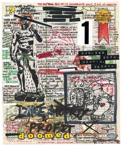
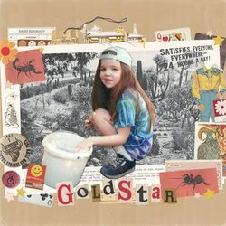
Jan.2024
///
GOLD STAR (Album Cover)
This is a collage that I made by scanning a bunch of ~1960s ephemera
lying around my house onto my computer and stitching it together using
Photoshop, then I slapped an old picture of me on top of it all.
Jun.2022
///
Woman of the Year
I made this collage by making photocopies of some images from a 1960s
Playboy magazine and this really cool, old "Woman of the Year" button
the wife and I found at a thrift store. I also used a few stamps and
miscellaneous scraps of paper from a random craft pile. Aren't women
so amazing?
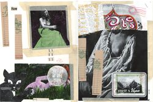
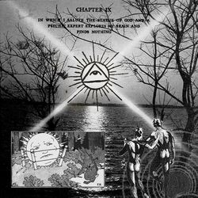
Aug.2021
///
Who Ever Heard of the Great Beast?
This is a digital collage I made to accompany a deep house song I made
a couple years ago. I mainly used assets sourced from my favorite
online archive,
OneLetterWords.
Craig uploads the most interesting materials and categorizes them in
such a pleasing way!
SEP.2021
///
The Cowboy Corral
I made this collage using a shitty black & white copier and some
masking tape at one of my old jobs. I made a bunch of copies and gave
them to all of my friends. It's simple but one of my favorites; the
Sims plumbob is the best part.
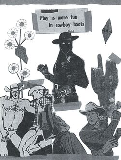
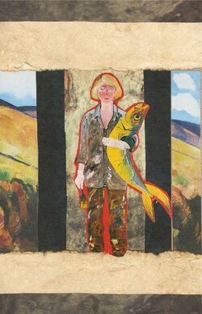
Aug.2021
///
Women Want Me, Fish Fear Me
This is a quick 10 minute collage I threw together at a local art
museum's creative space. They had a bunch of prints of various
artworks in the museum that you could cut up and glue onto a notecard.
The woman with the fish has always been one of my favorite paintings
at this particular museum, so I was really excited that it was one of
the options.
Aug.2021
///
Sign Up Now!
I made this
(extremely uplifting) collage during a workshop that my
girlfriend and I attended. The artist who ran the workshop,
Tay Butler, is an
incredibly talented artist. I would highly recommend checking out his
works, especially his video collages.
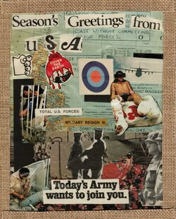
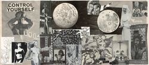
Jun.2021
///
Sheer Delight!
This is my favorite collage that I've ever made. It's pretty big
(3 letter-sized pages taped together) and is an "interpret it
how you would like" statement on the church and lesbianism. I cut all
the images out of old magazines from the '50s and '60s; the only
criteria for making it was that everything had to be black-and-white.
Dec.2019
///
Untitled
I found this in a notepad from a boring desk job I had long ago. I
don't like to go too insane with every collage that I make, so I like
that this one is cartoony and more "fun" than some of my other ones.
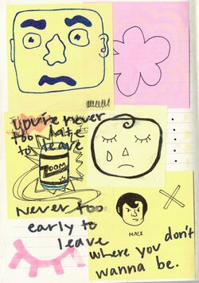
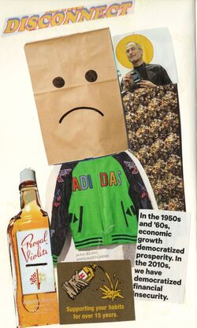
Jan.2019
///
Fools' Gold
This was a fun one. I used my Xbox game manual for
Grand Theft Auto: San Andreas and a Seventeen magazine for the
pictures. Also fuck Steve Jobs! :)
Sep.2018
///
The Breakup
I made this collage after I broke up with my first (and only)
boyfriend. I thought I was pretty sly using the ripped up Mac Demarco
j-card for this one. I, of course, angrily ripped it up for some
reason during the course of our relationship. Thank god I'm a lesbian!
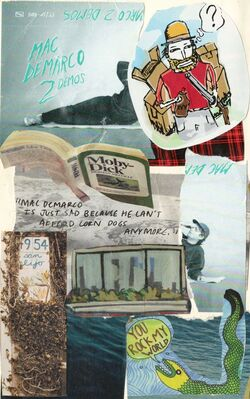
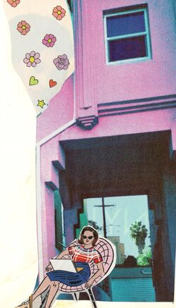
Jun.2018
///
Lounging Lady
I've always loved mid-century design AND women, so this is a perfect
early culmination of those interests. Cool colors too! I'm pretty sure
I ripped these from a Reader's Digest magazine.
Jun.2015
///
Where to?
I think this is the first collage that I ever finished; before I was a
teenager, I mostly just played the guitar and did pencil-based
drawings. I made this as a present for my mom's birthday because she
loves Wes Anderson and whimsical shit in general. I think she still
has the physical copy stashed away somewhere.